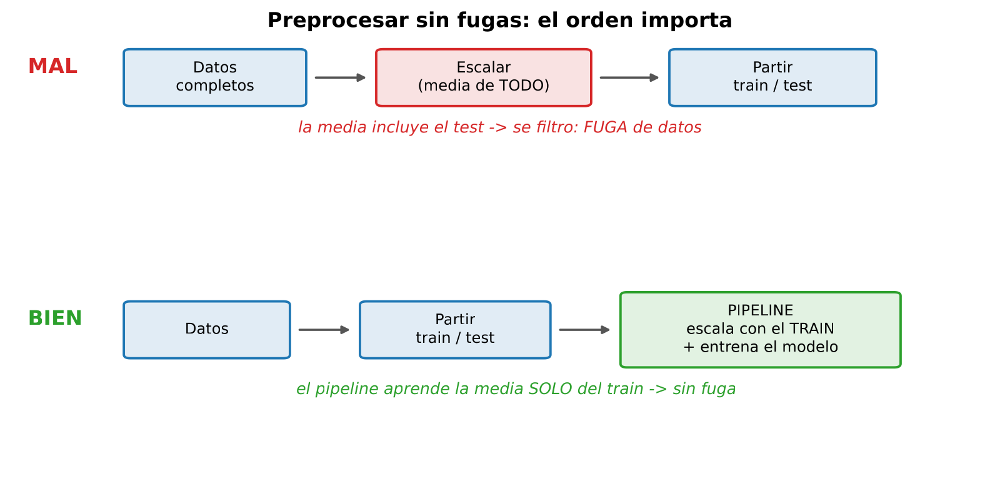
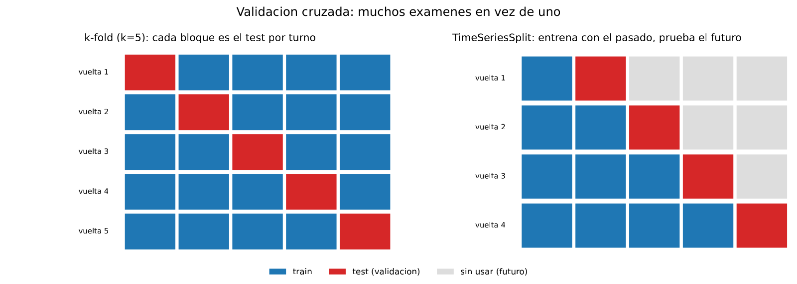
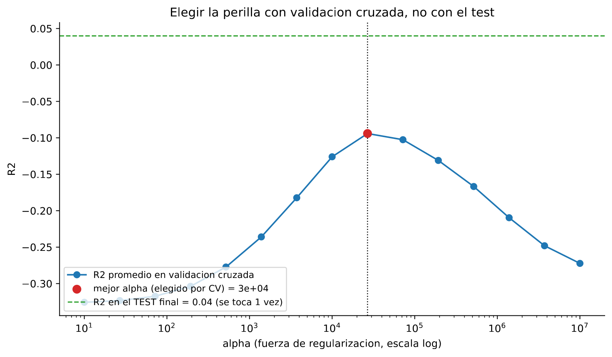

En 30 segundos
- R² −0,13 de promedio en validación cruzada temporal. Negativo: peor que predecir siempre la media.
- El corte único del módulo 2 era suerte. Los cinco bloques dan de −0,011 a −0,271. Con uno solo se reporta el que toque.
- El alfa honesto es 27.000, no 215.443. Elegido dentro del entrenamiento, sin mirar el test. Y el test, tocado una sola vez, da 0,04.
- Un pipeline no es orden, es defensa. Escalar antes de partir mete el futuro en la media.
- La variación importa tanto como el promedio. ±0,103 sobre un promedio de −0,126 significa que la cifra sola no dice nada.
Qué resuelve este módulo
Los tres módulos anteriores midieron con un solo corte temporal: entrenar hasta julio, probar en agosto y septiembre. Un solo examen.
Aquí se pregunta si ese examen era representativo. La respuesta es que no, y la corrección duele: el modelo pasa de parecer flojo a ser peor que no tener modelo.
También se ordena el preprocesamiento. Escalar, imputar y codificar tienen que ocurrir dentro del entrenamiento, nunca antes de partir. Un pipeline lo garantiza por construcción.
Antes de la teoría: un ejemplo de juguete
Un modelo evaluado sobre cinco bloques distintos de meses. Cada bloque es un examen.
| Bloque | R² |
|---|---|
| 1 | 0,00 |
| 2 | −0,20 |
| 3 | 0,00 |
| 4 | −0,20 |
| 5 | −0,10 |
Paso 1. Lo que pasa si solo haces un examen
Si el proyecto hubiera medido únicamente el bloque 1, reportaría R² 0,00. Empate con no tener modelo.
Si hubiera medido el bloque 2, reportaría −0,20. Bastante peor que no tener modelo.
Es el mismo modelo y los mismos datos. Lo único que cambia es qué trozo tocó de examen.
Paso 2. El promedio de los cinco
promedio = (0,00 − 0,20 + 0,00 − 0,20 − 0,10) / 5
= −0,50 / 5
= −0,10Paso 3. Cuánto se mueve el resultado
Se mide igual que en el módulo 1: apartamiento de cada bloque respecto al promedio.
apartamientos: +0,10 −0,10 +0,10 −0,10 0,00
cuadrados: 0,01 0,01 0,01 0,01 0,00 suma = 0,04
varianza = 0,04 / 4 = 0,01
desviación = raíz de 0,01 = 0,10Promedio −0,10 con desviación 0,10. El resultado se mueve tanto como vale. Reportar solo el promedio esconde eso.
Paso 4. Y la otra trampa: escalar antes de partir
Cinco horas de entrenamiento y dos de prueba, con la sílice medida:
entrenamiento (mar a jul): 3 3 5 7 7 media = 5
prueba (agosto) : 10 14Si el escalador se ajusta solo con entrenamiento, la media que usa es 5. La hora de 10 queda a 2,5 desviaciones por encima, que es lo que realmente fue.
Si el escalador se ajusta con todo, la media pasa a ser 7:
media con todo = (3 + 3 + 5 + 7 + 7 + 10 + 14) / 7 = 49 / 7 = 7Con esa media, la hora de 10 parece mucho menos extrema de lo que fue. El escalador ya sabía que agosto iba a subir. Eso es fuga por preprocesamiento, y no la ve nadie mirando el código por encima.
Paso 5. Qué acaba de pasar
Dos formas distintas de engañarse, las dos silenciosas.
La primera es medir una sola vez y creerse el número. La segunda es dejar que el preprocesamiento vea datos que en producción no existirían. El resto del módulo pone una defensa para cada una.
Glosario
11 términos, en palabras simples
- Validación cruzada. Repetir el examen sobre trozos distintos de los datos y promediar los resultados.
- Pliegue. Cada uno de esos trozos. En inglés, fold.
- k-fold. Partir en k trozos y usar cada uno como examen por turno. Sirve cuando el orden de las filas no importa.
- TimeSeriesSplit. La versión para series de tiempo. Entrena siempre con el pasado y examina con el futuro inmediato.
- Pipeline. Un objeto que encadena preprocesamiento y modelo. Al entrenarlo, cada paso aprende solo del entrenamiento.
- Fuga por preprocesamiento. Calcular medias, escalas o imputaciones usando también los datos de prueba.
- Parámetro. Lo que el modelo aprende solo, como los coeficientes de una recta.
- Hiperparámetro. Lo que tú fijas antes de entrenar, como alfa o la profundidad máxima.
- Búsqueda en rejilla. Probar todas las combinaciones de una lista de valores. En inglés, grid search.
- Conjunto de validación. El trozo con el que se eligen las perillas. No es el de prueba.
- Conjunto de prueba. El que se toca una sola vez, al final, para reportar.
Paso a paso
Paso 1. Meter el preprocesamiento dentro del modelo
Un pipeline encadena escalador y modelo en un solo objeto. Al llamar a entrenar, el escalador aprende solo del entrenamiento. Al predecir, aplica lo aprendido.
La defensa no es acordarse del orden correcto. Es que el orden incorrecto deje de ser posible.
Paso 2. Elegir el tipo de validación según los datos
Con filas independientes, k-fold reparte al azar y está bien. Con una serie de tiempo, no.
Repartir horas al azar pone el futuro en el entrenamiento. TimeSeriesSplit respeta el orden: cada pliegue entrena con el pasado y examina con lo que viene justo después.
Paso 3. Mirar los cinco resultados, no solo el promedio
Un promedio con mucha variación es un promedio poco informativo. Los pliegues se reportan enteros.
Paso 4. Elegir las perillas sin tocar el test
La búsqueda en rejilla prueba cada valor de alfa y lo puntúa con validación cruzada dentro del entrenamiento. El conjunto de prueba no participa.
Cuando ya hay un ganador, se entrena con todo el entrenamiento y se toca el test una vez.
El código, por partes
Paso 1. Un pipeline en dos líneas
from sklearn.pipeline import make_pipeline
from sklearn.preprocessing import StandardScaler
from sklearn.linear_model import Ridge
modelo = make_pipeline(StandardScaler(), Ridge(alpha=1e4))
modelo.fit(X_train, y_train)línea por línea, 3 entradas
make_pipeline(a, b)- Encadena pasos. La salida de uno entra en el siguiente.
modelo.fit(...)- Entrena el pipeline entero. El escalador aprende media y desviación solo aquí dentro.
modelo.predict(...)- Aplica el escalado ya aprendido y luego el modelo. Sin repetir código y sin poder equivocarse de orden.
Figure: fig_m4_pipeline.pdf
Paso 2. Validación cruzada que respeta el tiempo
from sklearn.model_selection import TimeSeriesSplit, cross_val_score
cv = TimeSeriesSplit(n_splits=5)
scores = cross_val_score(modelo, X_train, y_train, cv=cv, scoring="r2")
print("R2 por fold:", scores.round(3))
print(f"Promedio: {scores.mean():.3f} +/- {scores.std():.3f}")línea por línea, 4 entradas
TimeSeriesSplit(n_splits=5)- Cinco pliegues en orden. El primero entrena con poco y los siguientes van acumulando pasado.
cross_val_score(...)- Entrena y evalúa una vez por pliegue, y devuelve los cinco resultados.
scoring="r2"- Con qué métrica puntuar. Se puede pedir RMSE u otras.
scores.std()- La desviación de los cinco resultados. Es la mitad importante del reporte.
R2 por fold (TimeSeriesSplit): [np.float64(-0.011), np.float64(-0.211), np.float64(-0.271), np.float64(-0.021), np.float64(-0.116)]
Promedio: -0.126 +/- 0.103
Los cinco resultados son negativos. El mejor es −0,011 y el peor −0,271, veinticinco veces más bajo.
Paso 3. Elegir alfa sin mirar el test
from sklearn.model_selection import GridSearchCV
import numpy as np
rejilla = {"ridge__alpha": np.logspace(2, 7, 20)}
busqueda = GridSearchCV(modelo, rejilla, cv=TimeSeriesSplit(n_splits=5), scoring="r2")
busqueda.fit(X_train, y_train)
print(f"mejor alpha: {busqueda.best_params_['ridge__alpha']:.1e}")
print(f"mejor R2 CV: {busqueda.best_score_:.3f}")línea por línea, 4 entradas
{"ridge__alpha": ...}- El doble guion bajo apunta a un paso del pipeline: la perilla
alphadel paso llamadoridge. np.logspace(2, 7, 20)- Veinte valores repartidos en escala logarítmica, de 100 a 10 millones.
GridSearchCV- Prueba cada valor con validación cruzada y se queda con el mejor. El test nunca entra.
.best_score_- La puntuación del ganador en validación cruzada, no en el test.
mejor alpha: 2.7e+04 | mejor R2 CV: -0.094 | R2 test final: 0.04
Figure: fig_m4_tuning.pdf
El resultado, medido
Qué esperábamos. Que la validación cruzada confirmara el 0,04 del módulo 2, con algo de variación entre pliegues. Es lo normal cuando hay medio millón de filas.
Qué salió. Los cinco pliegues negativos y un promedio de −0,126.
| Medición | R² |
|---|---|
| Corte único, módulo 2 | +0,04 |
| Corte único con alfa elegido mirando el test, módulo 3 | +0,061 |
| Validación cruzada temporal, cinco pliegues | −0,126 ± 0,103 |
| Alfa elegido honestamente, test tocado una vez | +0,04 |
Qué significa. El corte único no era representativo. Entrenar hasta julio y examinar en agosto resultó ser una de las combinaciones más benignas posibles.
Un R² negativo quiere decir algo concreto: el modelo predice peor que decir siempre la media del entrenamiento. En tres de los cinco pliegues eso es lo que pasa de forma clara.
Por qué los pliegues salen tan distintos
El primer pliegue entrena con marzo y examina abril, y da −0,011. El tercero cae a −0,271.
Esa dispersión no es ruido de muestreo. Es la planta cambiando. El módulo 9 encuentra la causa con aprendizaje no supervisado: uno de los tres regímenes operativos retrocede en abril y desaparece en mayo.
La corrección al módulo 3
El alfa de 215.443 se había elegido mirando el test. Repetido con búsqueda en rejilla dentro del entrenamiento, el ganador es 27.000, ocho veces menor.
Con ese alfa honesto, el test tocado una sola vez da 0,04. El 0,061 del módulo 3 era optimista, y la diferencia es exactamente lo que costaba la trampa.
Lo que este módulo deja abierto
Con validación honesta, ningún modelo del proyecto supera a predecir la media. El techo no solo es bajo: en promedio es negativo.
Quedan dos caminos. El primero es aceptar que no hay señal. El segundo es sospechar de las variables: quizá el proceso tiene memoria y ninguna columna la captura. El módulo 5 prueba ese segundo camino, y el número sube mucho.
Ojo
- Un solo corte es una lotería. Aquí el corte del proyecto daba +0,04 y el promedio honesto es −0,126. No hubo mala fe, hubo un solo examen.
- Reportar el promedio sin la variación engaña. −0,126 ± 0,103 y −0,126 ± 0,005 son resultados completamente distintos.
- k-fold aleatorio sobre series de tiempo es fuga. Reparte horas contiguas entre entrenamiento y prueba. Hay que usar
TimeSeriesSplit. - El escalador ajustado con todos los datos ya vio el futuro. El pipeline lo impide por construcción, y por eso se usa siempre.
- Elegir perillas con el test lo quema. Deja de ser una medida independiente en cuanto participa en una decisión.
- R² negativo no es un error de código. Significa que el modelo va peor que la media.
Puente metalúrgico
La validación cruzada es repetir el ensayo en distintas campañas. Una prueba de flotación sobre una sola muestra da un número. Repetirla sobre muestras de cinco campañas distintas da cinco números, y su dispersión dice si el resultado se sostiene.
Un metalurgista que reporta una recuperación de una sola prueba, sin repetición, no tiene un resultado. Tiene una anécdota. El módulo 2 tenía una anécdota.
El pipeline es el protocolo de preparación de muestra. El orden de cuarteo, secado y pulverizado está escrito y se sigue igual siempre, para que dos laboratorios den lo mismo. Y también evita el equivalente de la fuga: homogeneizar la muestra de control junto con las de ensayo contamina el control y arruina la comparación.
Y el alfa elegido con validación es calibrar el analizador con patrones y verificarlo con una muestra que no se usó para calibrar. Verificar con los mismos patrones de la calibración siempre sale bien, y no demuestra nada.
Repaso
El módulo 2 midió +0,04 y la validación cruzada da −0,126. ¿Cuál es el bueno?
El de la validación cruzada, porque promedia cinco exámenes en vez de uno.
El corte único del módulo 2 entrenaba con marzo a julio y examinaba agosto y septiembre. Resultó ser una combinación benigna. Al repetir el ejercicio sobre cinco tramos temporales distintos, los cinco salen negativos, entre −0,011 y −0,271. La lectura honesta es que este modelo, de media, predice peor que decir siempre la media del entrenamiento.
¿Qué significa exactamente un R² negativo?
Que el modelo lo hace peor que el rival mínimo.
El R² se construye comparando el error del modelo con el error de predecir siempre la media del entrenamiento. Un R² de cero significa empate con esa media. Positivo significa mejor. Negativo significa que el modelo introduce más error del que quita. En este proyecto pasa cuando el modelo aprendió patrones de unos meses y la planta ya está operando de otra manera.
¿Por qué no vale k-fold aleatorio aquí?
Porque reparte horas contiguas entre entrenamiento y prueba, y las horas contiguas se parecen muchísimo.
El modelo entonces no predice el futuro: reconoce una hora casi idéntica a otra que ya vio. Es la misma fuga que explicaba el módulo 1, ahora colada por la puerta de la validación. TimeSeriesSplit lo evita porque cada pliegue entrena solo con el pasado y examina con el futuro inmediato, igual que ocurriría en planta.
¿Por qué un pipeline y no escalar a mano antes de partir?
Porque escalar antes de partir calcula la media con datos que en producción todavía no existen.
En el ejemplo del módulo, la media del entrenamiento es 5 y la media con todo es 7. Con la media equivocada, una hora extrema de agosto parece normal, y el modelo se entrena sobre una versión del pasado que ya sabía el futuro. El pipeline hace que ese error sea imposible: cada paso aprende dentro del entrenamiento y luego se aplica.
La dispersión entre pliegues es ±0,103. ¿Qué habría que investigar?
Que los datos no son homogéneos en el tiempo. Una dispersión así de grande no es ruido de muestreo.
Los pliegues van en orden cronológico, así que la diferencia entre ellos apunta a un cambio en el proceso. La investigación correcta es buscar ese cambio en vez de promediarlo. En este proyecto lo encuentra el módulo 9 con k-medias: hay tres regímenes operativos y uno de ellos desaparece en mayo. Eso explica por qué un modelo entrenado con marzo y abril rinde mal después.